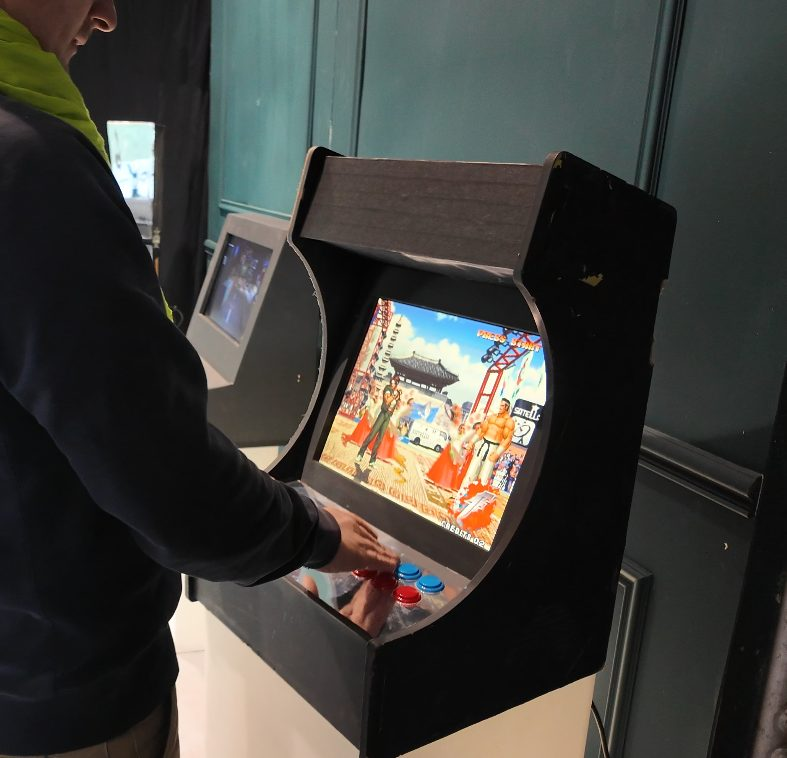
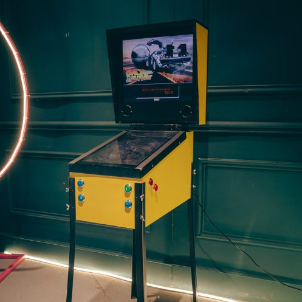

Brique
La console qu’on assemble, les jeux qu’on invente.

L’animation
L’atelier « Ma Console » : des jeunes soudent leur console, puis créent leur jeu en le décrivant à une IA. Chacun repart avec sa console, et ses jeux dedans.
Fête publique, famille, atelier pour les jeunes : on repart avec sa console.
En trois étapes
Fabriquer : fer à souder en main, on assemble sa console, un écran couleur, trois boutons, un cerveau ESP32-C3.
Comprendre : des commandes, des règles « quand… alors… », un but, un univers. Avec trois boutons, la contrainte fait inventer.
Créer : on décrit son jeu, l’agent IA l’écrit, le teste et l’envoie sur la console par le câble USB.


Un même atelier, trois façons d’y entrer
Guidé · CM1, CM2
Des boutons d’aide pour lancer son premier jeu. La console peut arriver déjà montée et testée.
Libre · 6e, 4e
Tout part de la phrase qu’on écrit : aucune liste, aucun jeu tout fait.
Sous le capot · ados et adultes
On lit le programme écrit par l’IA, on le modifie, on peut brancher son propre agent.
Autres animations

Bornes d’arcade
Sur pied ou sur table, les classiques qu’on connaît tous.
Voir l’animation →
Flipper numérique
Le flipper sans limites : des dizaines de tables, à un ou deux joueurs.
Voir l’animation →
Game & Watch géant
Une console de poche rétro, en version géante sur pied. Elle attire l’œil de loin.
Voir l’animation →Brique pour votre événement ?
Donnez-nous la date, le lieu et le nombre d’invités : nous vous répondons avec une formule et un devis détaillé.